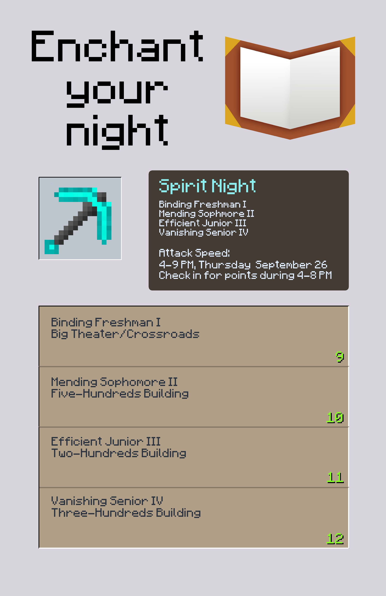
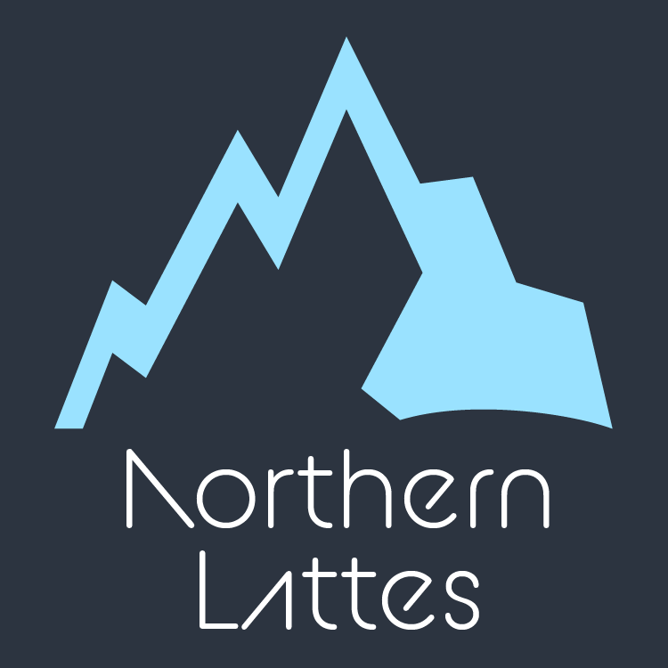
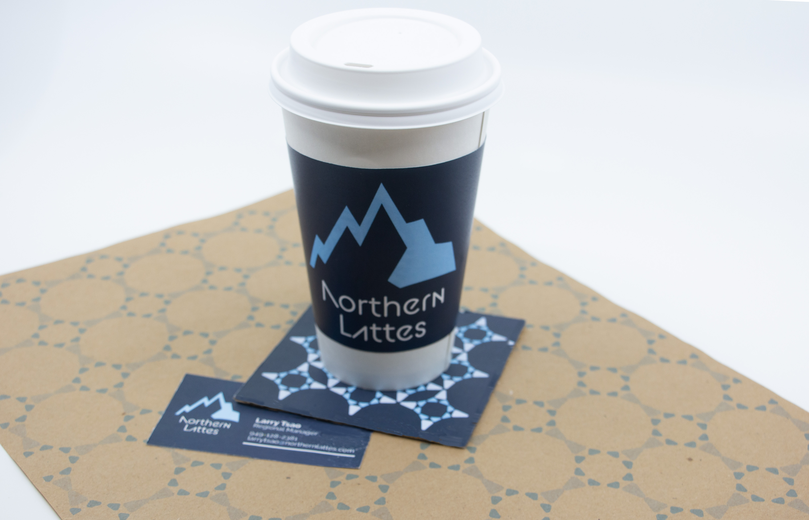
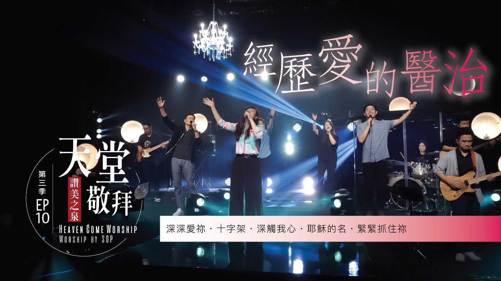

MY WORK
take a look at some of my work!
MY GRAPHIC DESIGN PROJECTS
click on the image for a closer look!

Enchant your Night
a poster advertising my high school's Spirit Night themed around pop culture


Northern Lattes Mockup
branding I created for a trendy and modern coffee shop
Personal Logo
a logo I created


The Martian
my take on an alternate cover for The Martian
PRODUCTIONS I'VE DIRECTED AS LIGHTING DIRECTOR
click on the thumbnail to view the video!

Stream of Praise Heaven Worship LIVE | Season 3, EP10